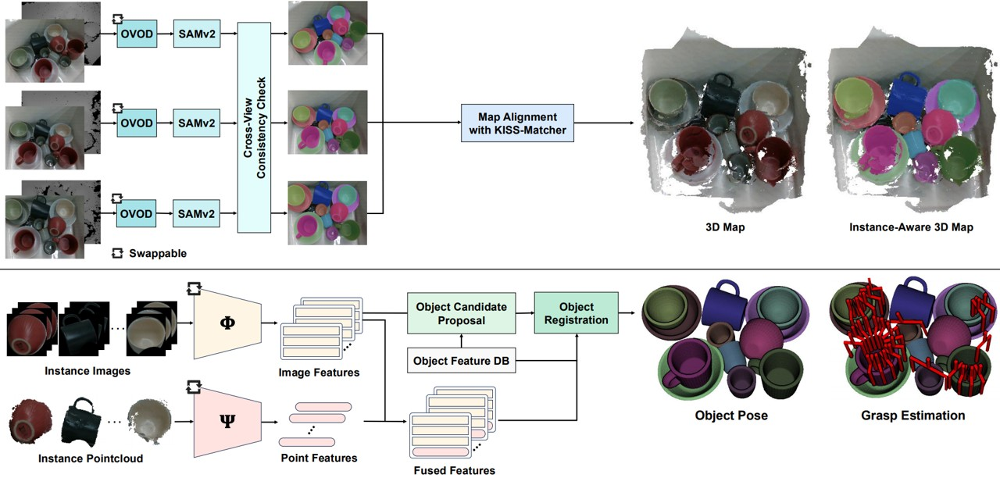

Abstract
Deploying robots in everyday human environments requires perception systems that are both robust and adaptable to diverse, dynamic conditions. In this work, we present a modular perception pipeline for household manipulation tasks, with a focus on dishware handling in kitchen environments. The pipeline integrates open-vocabulary object detection, multi-view segmentation, instance-aware 3D reconstruction, and a 2D-3D feature fusion strategy for 6D pose estimation and grasp planning. Its modular design enables systematic substitution of multiple visual and geometric foundation models, allowing us to identify the best-performing configuration through extensive evaluation on a custom kitchen dataset. The best-performing configuration (LLMDet + SAMv2 + DINOv2 + GeoTransformer) achieves an ADI of 89.12% on the 20-scene kitchen benchmark with cluttered and occluded conditions. Furthermore, real-world demonstrations confirm that the best configuration can be deployed on physical robots without environment-specific retraining, successfully executing tasks such as sink-to-dishwasher transfer and cup stacking. It validates the adaptability and scalability of the pipeline and highlights its potential as a practical framework for household robotic systems.
Video
Modular and Zero-Shot Perception Pipeline

Powered by PAPRAS
All real-world demonstrations were conducted using PAPRAS.
PAPRAS is a Plug-And-Play Robotic Arm System designed for rapid deployment across everyday environments. Its portable arms and modular mounting approach make it a natural platform for evaluating household manipulation across diverse kitchen environments.
Explore PAPRASReal-Kitchen Demonstrations
We deploy the best-performing configuration on physical robots across diverse kitchen environments, validating sink-to-dishwasher transfer, simple grasping, and cup stacking without any environment-specific retraining.
(Embodiment Change)
Failure Cases
Representative failure modes observed in real-world deployment
BibTeX
@article{jeon2026kitchen,
title = {Kitchen Robotic Manipulation utilizing Foundation Models},
author = {Jeon, Myung-Hwan and Yamsani, Sankalp and Kim, Joohyung},
journal = {Intelligent Service Robotics},
year = {2026},
url = {https://raivlab.github.io/FM_kitchen},
note = {Accepted. To appear.}
}